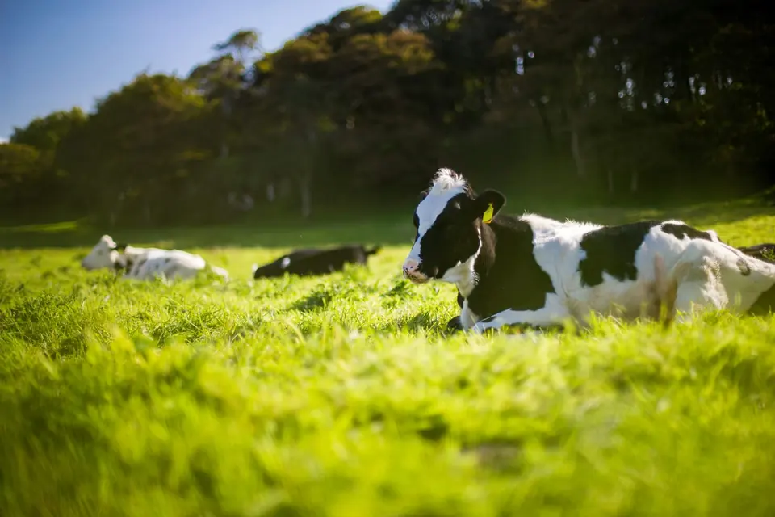

Web Design in Tillamook, Oregon
Websites for Tillamook businesses, built by one person in Bandon. From $649, with the prices listed before you call.

Tillamook is a working town with a tourist river running through it: creamery traffic on one side, farms, trades, and equipment yards on the other. Whether your customer is a visitor looking for lunch or a rancher looking for a repair, they both start with a search. Your site should answer fast, load fast, and make the call button obvious.
Who it is for
Tillamook works two economies at once. On the visitor side, the Creamery pulls crowds off 101 every single day, and the restaurants, shops, and lodging that catch that traffic need to show up on phones in the parking lot. On the working side, this is dairy country: farm services, equipment dealers, large-animal vets, feed and supply stores, plus the contractors and trades that keep farms and homes running through a wet winter. Both kinds of customers search before they call. I build sites that answer fast either way.
Every package includes mobile optimization, SSL, basic SEO, Google Analytics, and a contact form that goes straight to your inbox. Pricing is on the site, no mystery quotes.
What it costs
Why Rooted Coast
I am based in Bandon on the southern Oregon coast and work with businesses up and down the coast and into the valley. Everything from kickoff to launch happens over email and one quick call, on your schedule.
The town
Everyone knows Tillamook for the Creamery, and the county's dairy farms have earned that fame over more than a century. Fewer visitors realize the Air Museum south of town lives inside a WWII blimp hangar that ranks among the largest wooden buildings on earth, or that Tillamook Bay still supports working boats out of Garibaldi. It's a county that makes real things. Its businesses deserve websites built the same way.
Questions
Roughly four hours, and no. Projects run by email and one call, which suits busy farm and shop schedules better than meetings anyway.
Yes, including Pacific City and Manzanita.
Often the Starter site at $649 is plenty: one clear page with your services, your area, and your number. When a new rancher or homeowner in the county searches, you're the professional option that comes up.
A free 15 minute call. I look at your business and tell you what I would build and what it costs.